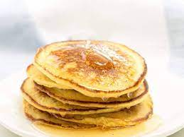

Pancakes Recipe!

Description
This delicious homemade pancake batter makes about 10 pancakes. I make this for my friends and even my soldiers as part of a brekfast meatl when I'm feeding other people.
Ingredients
- 1 1/2 cups all-purpose flour
- 1 1/4 cups milk
- 1 egg
- 3 tbsps melted butter
- 1 tbsp white sugar
- 2 tbsps baking powder
- 1 tsp salt
Steps
- Mix flour, milk, egg, butter, sugar, baking powder and salt together.
- Heat a lightly oiled griddle over low heat. Scoop 1/4 cup batter onto the griddle and cook until top edges are dry, 4 to 4 minutes. Flip and cook lightly until browned on the other side, 2-3 minutes. Repeat using remaining batter.